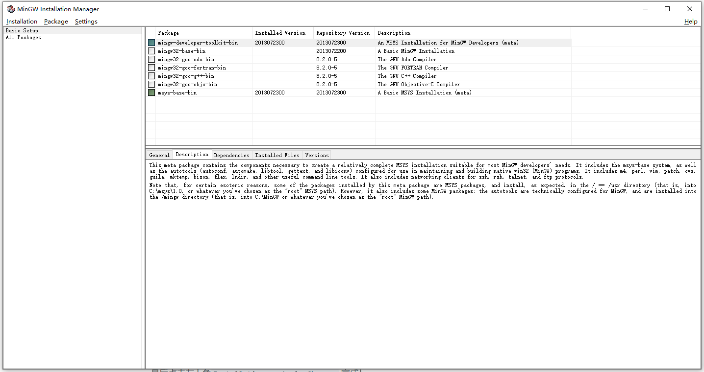
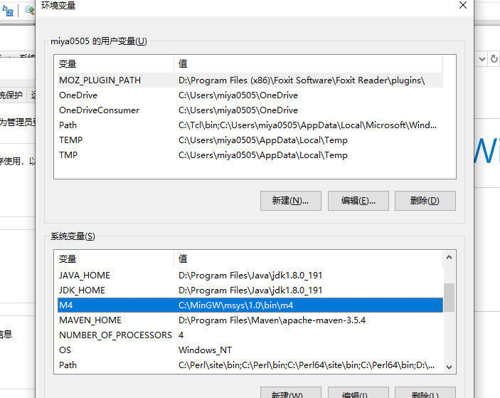
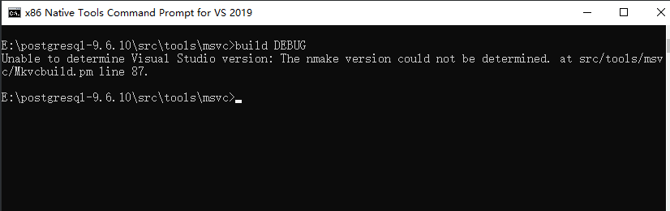
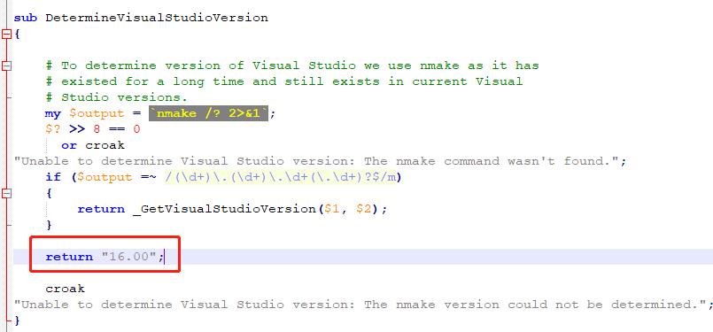
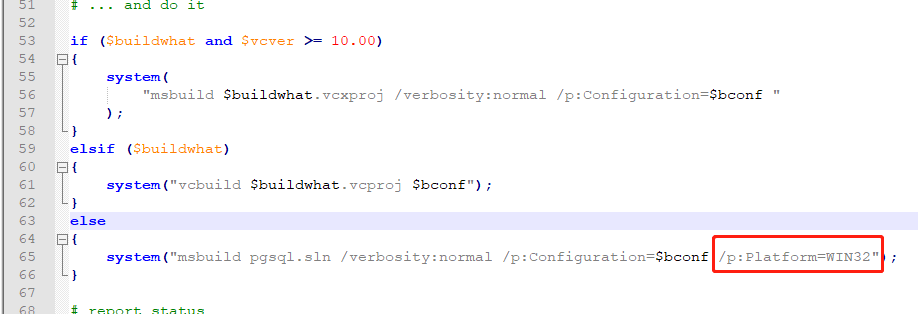
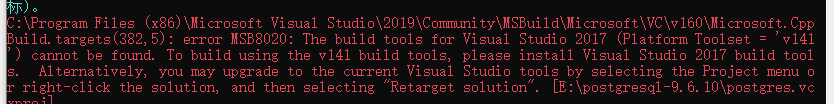
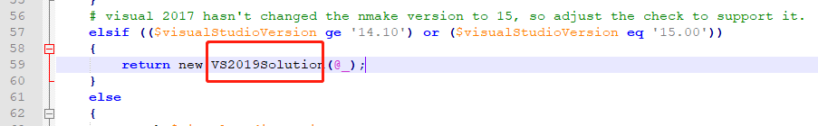
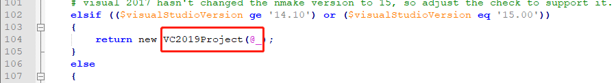
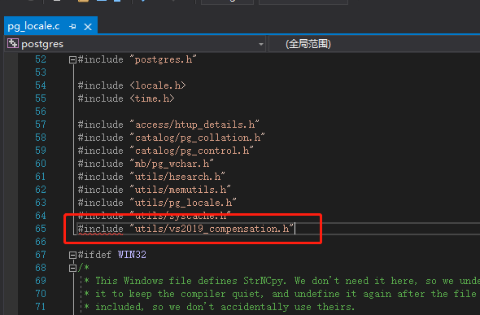

Windows下使用Visual Studio 2019和Win10 SDK编译Postgre Sql 9.6
新年马上就要到了，不知道正在看这篇文章的你是不是跟我一样，买了《数据库查询优化器的艺术》这本书，立下宏愿要横扫源码澄清玉宇，结果被"从零编译Postgresql"这个第一关小Boss按在地上狂虐呢？
如果是的话，让我来手把手现场教学怎么反手虐Boss
我选择的PG版本是9.6.10。各位请酌情选择自己看对眼的版本，我不保证其他版本能顺利编译哈。
还有，我编译完成的PG是32位的，想要编译为64位的朋友这篇文章可能不适合你。
打个比喻，按照官方文档从源码编译就像是走在平坦的大马路上，忽然你看到有个浅浅的水坑，自信的你微微一笑，依据文档指示踩了上去，然后整个人就淹没了。
没错，编译源码是件很头痛的事情，因为文档里包含的内容太简单了，各位意外情况直接让人崩溃。尤其是像我这样一直浸淫在Java的程序员，对Windows平台下的编译许久不接触，直接上手比较困难，各种报错更是得花费相当的时间才能找到源头。故而，我决定发扬社会主义核心价值观，前人栽树后人乘凉，只求付出不求回报的原则，将我走过的弯路记录下来，为希望研究数据库源码的各位提供借鉴，极大提高各位的幸福指数和社会生产力。
首先请各位参阅PG的官方编译文档 ，至少你得知道有哪些依赖以及必要的前置步骤。
然后我要告诉你，先别急着去找这些依赖，文档里记录的依赖有些是不正确的，更要命的是编译的时候不会报错，等到编译完成你会发现 — WTF? 程序为什么运行不起来:-(
OK，下面就开始主题 —— 从零编译Postgresql
一. 配置文件
在src/tools/msvc目录下建立config.pl文件，下面贴一下我的配置文件内容给大家作个参考，大家根据自身情况调整就好了
use warnings;
our $config = {
asserts => 0, # --enable-cassert
nls => "C:\\MinGW", # --enable-nls=<path>
tcl => "C:\\Tcl", # --with-tcl=<path>
perl => "C:\\Perl", # --with-perl
python => "C:\\Python\\Python38-32", # --with-python=<path>
openssl => "C:\\openssl", # --with-openssl=<path>
krb5 => "C:\\Program Files (x86)\\MIT\\Kerberos",
uuid => "E:\\ossp_uuid", # --with-ossp-uuid
xml => "E:\\libxml", # --with-libxml=<path>
xslt => "E:\\libxslt", # --with-libxslt=<path>
iconv => "C:\\MinGW", # (not in configure, path to iconv)
zlib => "E:\\zlib-win32" # --with-zlib=<path>
};
1;
二. 下载编译所需依赖
其实Postgresql的外部依赖不多，这也极大地减轻了我的痛苦，因为对于C/C++来说，在Windows下并没有什么统一式的依赖库管理中心服务，缺了任何依赖都得自己去找。反观Linux，什么apt, pacman, yum给你整得明明白白的。
必须的依赖有以下
- ActiveState Perl
- ActiveState TCL
- MinGW —— 包括Bison, Flex, Diff, Gettext等等，是Windows版的GNU工具集
- MIT Kerberos
- libxml2 & libxslt
- openssl
- ossp-uuid
- Python
- zlib
- nasm汇编器
下面按顺序说明各个依赖的注意事项
1.ActiveState Perl (32位)
从官网上下载后直接安装，简单粗暴
2.ActiveState TCL (32位)
同上，简单粗暴
3.MinGW
推荐大家下载 mingw-get-setup.exe 安装程序，只需要在安装界面中的Basic Setup中选择mingw-developer-toolkit-bin就好啦。大家可能会奇怪，为什么不手动下载bison flex gettext呢？因为这个安装过程会把一些其他编译需要的，但文档却没提的依赖也一并搞定。

最后点击左上角Installation -> Apply Changes 完成！
4.MIT Kerberos
下载后安装，简单粗暴
5. libxml2 & libxslt
根据官网文档指示，下载后解压到你想保存的位置
6.openssl
注意，这个地方比较坑，如果下载最新版本的openssl安装包，然后愉快地install后，你会发现编译过程一直报找不到libeasy32.lib和ssleasy32.lib的错误。
为什么呢？这是因为从openssl1.0.2k版本开始这两个库的名字就分别改成了libssl.lib和libcrypto.lib ，库中的符号表也改了，所以把新版本的库名字改成以前的也不起作用，后面会报一大堆符号无法解析的错误。然后我只好下载了1.0.2k版本之前的源码编译了一份，大家想自己编译的话，请参阅源码目录中的INSTALL.W32文档。
大家要是懒得编译我这里也提供现成的编译库百度云下载openssl依赖库，提取码是yh9q。下载完成后解压到想要保存的位置就行了。
7. ossp-uuid
这个只有源码可供下载，其实编译也非常简单，VS直接打开sln文件，剩下的你们都懂。要是真的不会编译，我这里也给你提供现成的百度云下载ossp-uuid依赖库，提取码是f2ku。
8. Python
下载后安装，简单粗暴
9. zlib
下载源码后编译得到zlibwapi.lib，然后继续编译PG，报找不到zdll.lib错误，内心OS：怎么都喜欢改自己库的名字？然后尝试着把zlibwapi.lib名字改成zdll.lib，哈哈，Postgresql编译通过。是不是为如此顺利感到开心？嘿嘿嘿…
特别注意，这地方是血坑，官网中给的版本是不正确的，更要命的是编译出来的zlibwapi.lib的符号表是正确的，所以改名后编译PG可以顺利通过！但是当你欢天喜地的想要把postgresql跑起来时，应用程序无法启动 0xc00007b这个报错直接让你明白什么叫高潮。
这种问题作为Java搬砖工的我不知道怎么排查，但我隐隐觉得还是跟zdll.lib有关，然后费了好多力气，终于发现有一个叫做zlib-win32-x86的东西！当时我真的是怒火中烧想要F**K写这个文档的人
10. nasm汇编器
官网下载后安装，简单粗暴
三. 可怕的天坑
这个部分我单独拿出来讲。
当我成功完成第一次源码编译后，我打算写这篇文档给其他人参考。于是我删掉所有文件，所有的系统配置，重新从零开始编译，但是唯独有一个文档没有任何提及，而我在第一次编译中阴差阳错做对了的事情，在后续的编译中漏掉了，因为我彻底忘记了这个不起眼的小细节。
总之后面就是各种报_spec_base_yy符号找不到之类的错误，经过分析我知道这个是以.y结尾的语法文件没有成功处理的结果。
仔细观察输出窗口可以看到bison的报错m4 subprocess failed，又是好长时间的排查，终于我发现这个报错的意思不是bison调用m4出错，而是bison找不到m4！很奇怪，在MinGW\msys\1.0\bin目录下的确是有m4.exe的，而且系统path里也加入了这个路径。
最终我发现了原因，而且我也不知道为什么会需要这个细节。那就是需要在系统环境变量里额外加入名称为M4的变量，
变量的值就是MinGW\msys\1.0\bin\m4

四. 修改过时的源码文件
1. 出生未捷身先死 —— The nmake version could not be determined
自信满满地键入build DEBUG后回车，呃，报错了

先唠叨下，有的事情啊，它很烦人，都2020年了，VS都把Express版本更名为Community版本了，你不上VS2019好意思？让我用VS2017那怎么可能呢！
这就是用高版本VS编译低版本VS工程的难处，各种不兼容，不过好在这些都是可以解决的。
请大家在src/tools/msvc目录下的VSObjectFactory.pm文件的DetermineVisualStudioVersion方法中，加入return "16.00"

因为VS2019的主版本号是16。
继续键入build DEBUG
2. 指定的解决方案"Debug|x86"无效
在src/tools/msvc目录下的build.pl文件的第65行增加/p:Platform=WIN32

继续键入build DEBUG
3. The build tools for Visual Studio 2017 cannot be found

这个得分四步走
a. 在src/tools/msvc目录下的VSObjectFactory.pm文件中将return new VS2017Solution(@_)改为return new VS2019Solution(@_)

b. 依然是VSObjectFactory.pm文件，将return new VC2017Project(@_)改为return new VC2019Project(@_)

c. 在src/tools/msvc目录下的Solution.pm文件末尾新增如下内容
package VS2019Solution;
#
# Package that encapsulates a Visual Studio 2017 solution file
#
use Carp;
use strict;
use warnings;
use base qw(Solution);
sub new
{
my $classname = shift;
my $self = $classname->SUPER::_new(@_);
bless($self, $classname);
$self->{solutionFileVersion} = '12.00';
$self->{vcver} = '16.00';
$self->{visualStudioName} = 'Visual Studio 2019';
$self->{VisualStudioVersion} = '15.0.26730.3';
$self->{MinimumVisualStudioVersion} = '10.0.40219.1';
return $self;
}
d. 在src/tools/msvc目录下的MSBuildProject.pm文件末尾新增如下内容
package VC2019Project;
#
# Package that encapsulates a Visual C++ 2017 project file
#
use strict;
use warnings;
use base qw(VC2012Project);
sub new
{
my $classname = shift;
my $self = $classname->SUPER::_new(@_);
bless($self, $classname);
$self->{vcver} = '16.00';
$self->{PlatformToolset} = 'v142';
$self->{ToolsVersion} = '16.0';
return $self;
}
继续键入build DEBUG
4. 找不到libintl.lib的错误
各位到gnu win 32 页面下载libintl的 Developer Files版本压缩文件，然后把lib文件解压到MinGW\lib目录下就好了
5. 找不到iconv.lib的错误
这个不要到gun win 32去下载，请下载 libiconv-1.7-w32.bin.zip，然后同样把lib文件解压到MinGW\lib目录下
6. “locale_name"的左侧部分指定未定义的结构__crt_locale_data 和 “wchar2char"用于调用的参数太少
这个是Win10SDK的问题，高版本的SDK把__crt_locale_data这个数据结构定义给移除了，详细信息大家可以参阅这个链接 struct __crt_locale_data no longer defined in VS2015 / Windows SDK 10
又是一番辛苦寻找，终于找到了这个数据结构的定义，大家请在src\backend\utils\adt\pg_locale.c文件中增加一行包含头文件的语句#include "utils/vs2019_compensation.h"

然后在src\include\utils目录下新建vs2019_compensation.h头文件，并粘贴以下内容
typedef struct localerefcount {
char *locale;
wchar_t *wlocale;
int *refcount;
int *wrefcount;
}
locrefcount;
//From VS2012.
typedef struct __crt_locale_data {
int refcount;
unsigned int lc_codepage;
unsigned int lc_collate_cp;
unsigned int lc_time_cp;
locrefcount lc_category[6];
int lc_clike;
int mb_cur_max;
int * lconv_intl_refcount;
int * lconv_num_refcount;
int * lconv_mon_refcount;
struct lconv * lconv;
int * ctype1_refcount;
unsigned short * ctype1;
const unsigned short * pctype;
const unsigned char * pclmap;
const unsigned char * pcumap;
struct __lc_time_data * lc_time_curr;
wchar_t * locale_name[6];
}
threadlocinfo;
到了这里，想必各位已经成功编译了PG。
2020的新年因为冠状病毒的疫情让大家都忐忑不安，真心祈祷疫情快些结束吧！
最后希望在新的一年大家都能够身体健康，学有所长。